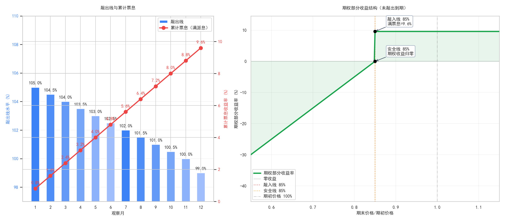

它不是直接押注单边上涨
这类产品更常出现在大家希望“不要太差，也别太无聊”的市场预期里。
有人看中票息空间，有人关心回撤缓冲，也有人只是想知道：这和普通理财到底有什么不同。
这类产品更常出现在大家希望“不要太差，也别太无聊”的市场预期里。
提前结束、持有到期、曾经跌破关键线，这些都会改变最后拿到的结果。
如果不把费用、敲入线和安全线一起看，很容易形成过高期待。
不是看某一只股票，而是看更能代表市场整体表现的指数。
每个观察月都可能决定产品是否提前结束。
不是买了就固定拿，而是和触发条件、费用、期末结果一起决定。
它决定了在不利情况下，产品结果会怎样分层变化。

标的表现较好时，产品可能在中途结束，投资者拿到对应阶段的累计结果。
没有触发不利条件时，产品通常按完整周期结算。
中途跌过并不一定直接导致最差结果，关键看是否跌破核心边界，以及期末有没有回到安全区间。
如果市场持续明显下行，安全垫也不能完全抵消尾部风险。
票息听起来很醒目，但最后结果仍然取决于观察条件、费用口径和市场路径。
98%保本率、90%安全线这些设计，是缓冲，不是无条件兜底。
如果只看“1.32%月票息”这类数字，而不看触发条件，就容易理解错产品。
你可以去讨论区看别人怎么理解产品，也可以直接发起自己的问题、风险判断或市场观点。
当前专题站用于帮助理解产品结构，不构成投资建议。 如果后续要做成公开网站，讨论区还需要补充内容管理和数据保存方案。